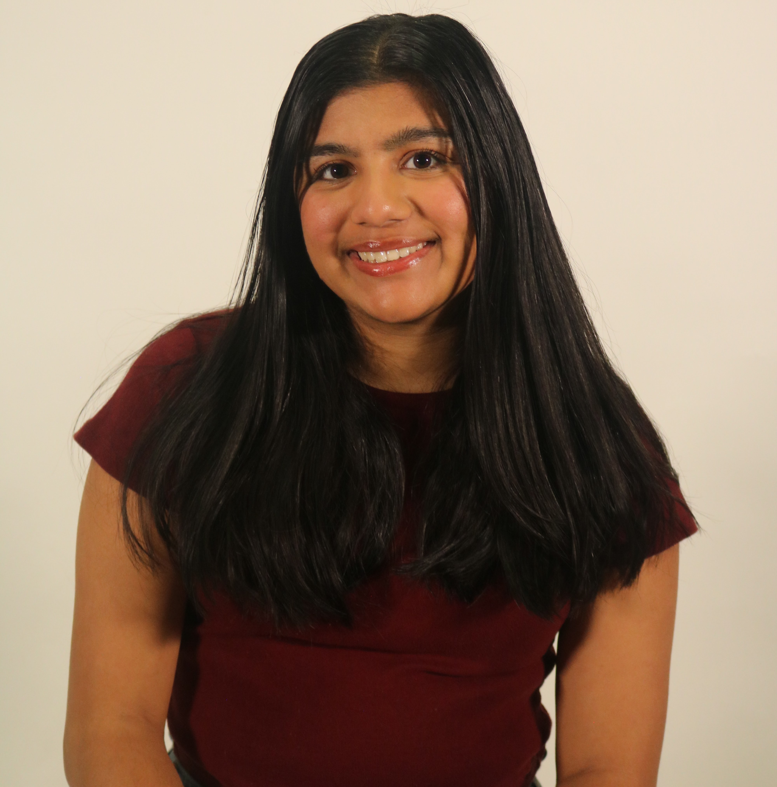

Simrun Rao
Senior at the University of Rochester seeking full-time opportunities in Digital Health, Healthcare Marketing and Research Coordination.
Contact
Email: srao20@u.rochester.edu
LinkedIn: Simrun Rao
Summary
Passionate about leveraging technology to improve health outcomes and promote social good. Experienced in health promotion and research, bridging healthcare and technology.
Experience
- University of Rochester -Senior Peer Health Advocate Assistant (2023 - Present)
- University of Rochester - Teaching Assistant (2025 - Present)
- Trillium Health - Community Health Intern (2024)
- Boston Medical Center - NIDA/NIH Health Economics Intern (Summer 2024)
- University of Rochester Medical Center - Student Library Assistant (2024 - Present)
Education
- University of Rochester - BA in Health, Behavior, and Society (Aug 2021 - May 2025)
- Minor in Digital Media Studies
- Study Abroad - Public Health, Stockholm (Spring 2024)
Skills
- Literature Reviews
- First Aid & CPR
- UX Design & Agile Methodology
- R, Python, CSS, HTML
Research
ResearchGate: Research Publications
Cities Preffered for Employment
- Bay Area, CA
- Boston, MA
- Chicago, IL
- Washington DC